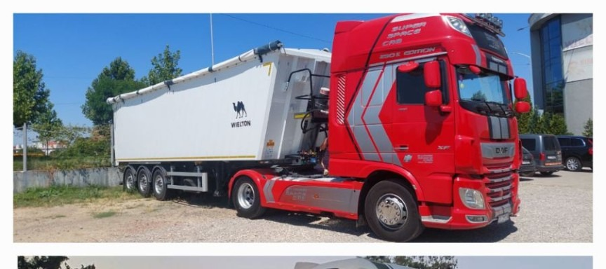
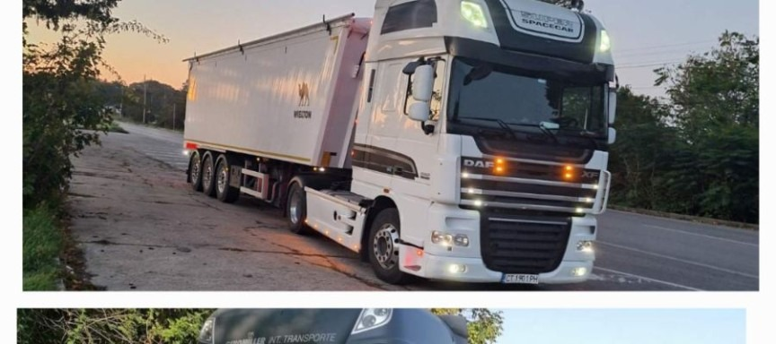
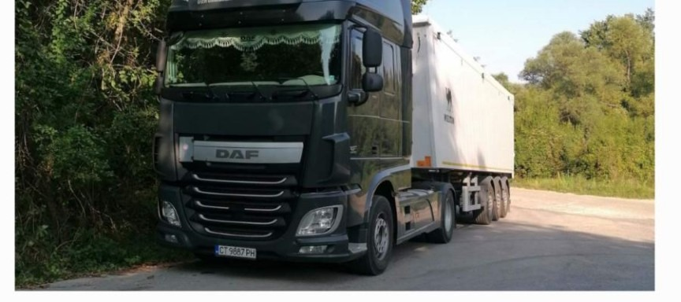
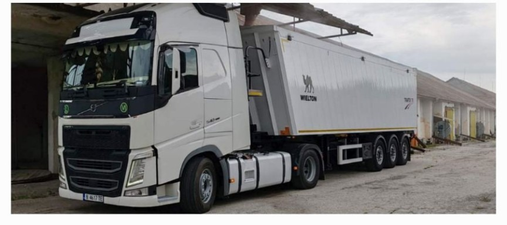

СИЛА.
ТОЧНОСТ.
ТРАФИК78.
Надежден транспорт на зърно и земеделска продукция. Коректност, отговорност и внимание към всеки товар.
Транспорт, на който можете да разчитате
ТРАФИК78 предлага транспорт на зърно и земеделска продукция. Работим с фокус върху коректността, сигурността и добрата организация на всеки курс.
Свържете се с нас, за да обсъдим вашия товар и необходимия транспорт.
Директна връзка с нас, организиран транспорт и отношение към всеки клиент. За информация и запитвания използвайте телефоните или имейла на ТРАФИК78.
Камионите на ТРАФИК78
Снимки от нашите камиони и транспортната ни дейност.




Да организираме вашия транспорт
За запитвания и информация се свържете с нас по телефона или изпратете имейл. Ще обсъдим вашите нужди и транспорт.